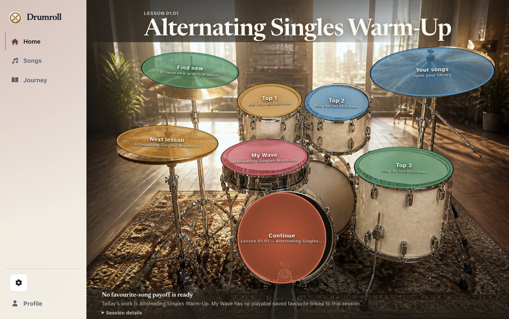
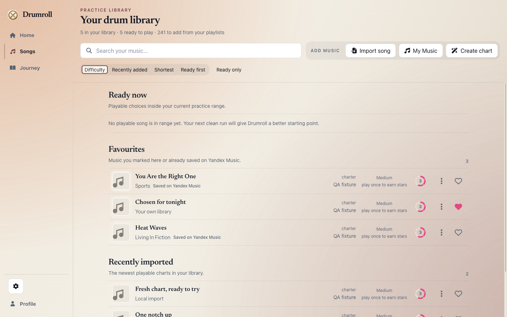
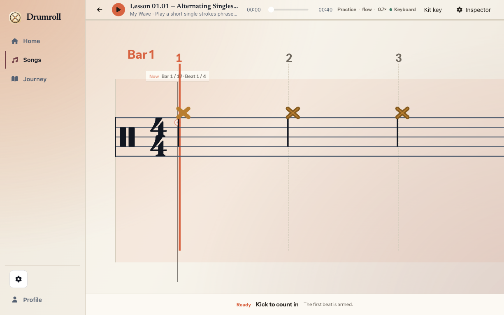
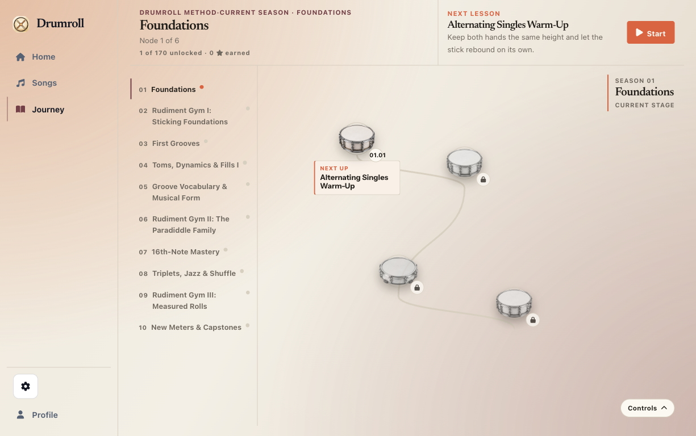

Drumroll
Your music
service for drums.
Sit at your kit, hit a pad, and keep playing. Drumroll keeps your practice wave, your songs, and your next step in one room.
Designed around MIDI input from an electronic kit.

One place to play
Less setup. More music.
Open Drumroll to a real next move: a song, a lesson, or My Wave. The kit stays in front; the detail waits nearby until it changes the next hit.
Your music
Keep the songs you care about within reach.
Favourites, ready-to-play tracks, and new charts share one personal library. The next playable choice stays close enough to begin when you sit down.
Bring your library to the kit

At the kit
See the music while you play it.
A fixed playhead and consistent drum-lane colours keep the next hit easy to find. Flow turns the score into a direct cue for hands and feet.
Keyboard and pointer controls remain available for setup and accessibility.
Your path
A practice path with a memory.
Journey keeps the next lesson in context. Saved sessions give Drumroll a factual record of your work, and Coach keeps its advice tied to the evidence it has.
Start with the next lesson
The desktop app
Put the room beside your kit.
Drumroll runs on Apple Silicon Macs. An electronic kit with MIDI input gives you the full kit-led experience; keyboard and pointer controls are there for setup and accessibility.
Developer ID signed · Apple notarized · verify SHA-256
Open the browser demoClear by design
What Drumroll can do today.
- At the kit
- Drumroll is designed around MIDI input from an electronic kit. Keyboard and pointer controls stay available for setup and accessibility.
- In a saved run
- Coach can explain the evidence a run contains. Exact trouble bars and targeted loops need full hit records.
- In a browser
- The shared learning surface is available at drumroll.pages.dev. Native MIDI, local files, and the complete kit-first setup remain desktop capabilities.